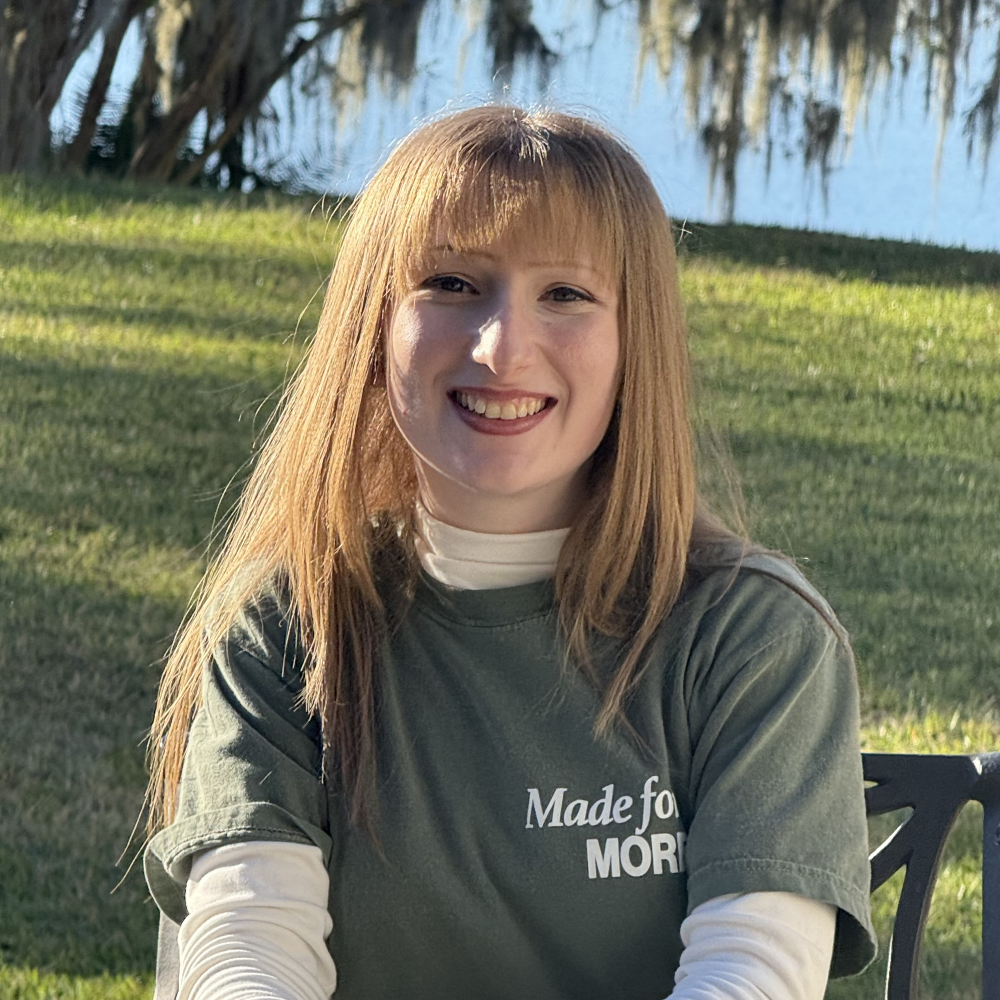
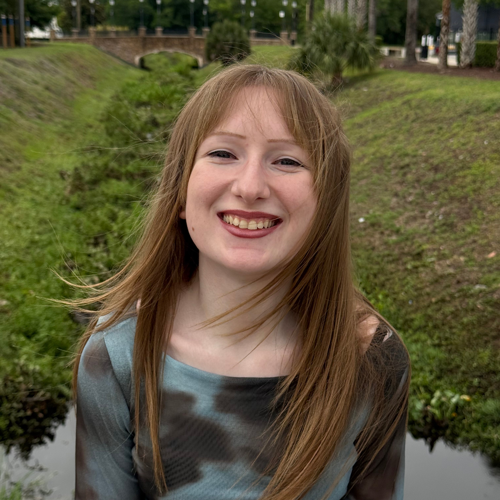

Caitlyn Larsen
I'm a
Faithful servant of Christ and my community, seeking higher opportunities to further cultivate a versatile skill-set and meet the needs of those around me.

Resume
I am a multifaceted, eager learner and Summa Cum Laude high school graduate with experience in retail, graphic design, and clerical assistance. I am Microsoft Office and IC3 GS4 Spark certified, have a typing speed of 70+ WPM, and am proficient in utilizing Point-of-Sale systems, Canva, and Krita. I have proven experience with peer collaboration, customer assistance, problem-solving, and task delegation. I am an attentive listener and a hands-on philomath, as well as an active member and volunteer within my church, and firmly believe in the importance of fostering meaningful relationships that last.
I look forward to connecting with you!

Contact Information
- caitlynfaith03@icloud.com
- +1(386) 601-1299
- Deltona, FL 32738
Education
High School Diploma
Pine Ridge High School 2018
Certifications
Microsoft Office Excel 2016
2018
Microsoft Office PowerPoint 2016
2018
Microsoft Office Word 2016
2017
IC3 GS4 Spark
2016
Professional Experience
Retail Associate
Part-time, On-site | March 2024 - April 2025
Dollar General
- Operated Point-of-Sale system for customers’ cash, card, and EBT payments and Hand Held Terminals for price checking, product tagging, and inventory count.
- Multi-tasked and adapted to sudden changes on sales floor in a fast-paced work environment.
- Stocked, rotated, and recovered aisles both independently and with other employees while assisting customers and maintaining register operation.
- Assisted in plan-o-gram resets, following directions quickly while working flexibly and efficiently with team members.
- Maintained general cleanliness and safety of store, including adhering to ADA regulations.
Co-Founder
Remote | June 2023 - March 2024
Barbeez
- Designed graphics and business logos for customized clothing and accessories, along with company website, business cards, customer receipts, and social media posts via programs including Krita, Canva, and Carrd.
- Served clients via email; sent periodic updates regarding the design process and utilized Zelle for customers' debit and credit card payments.
- Photography, videography, and social media marketing experience editing and uploading photos and videos for the company's Instagram and Facebook pages.
- Experienced with miscellaneous tasks including operating heat press, packaging customers' orders, maintaining organized work space, and verifying inventory.
Volunteer Experience
Graphic Designer
Hybrid | May 2025 - July 2025
Quantex Games
- Designed Non-Diegetic user interfaces, including player health bar, currency count, mini-map icons, and various in-game menu buttons, to clearly convey crucial game mechanics to players.
- Composed promotional materials, including multiple logos and icons, which were displayed at a final project showcase at Full Sail University in July 2025.
- Reported to the project's lead producer and collaborated with the development team of 5 to amass game concepts and references necessary to draft designs and revise them according to team’s feedback.
Filing Clerk
On-site | April 2022 - May 2022
Pine Ridge High School
- Communicated regularly with counselors and front staff regarding daily assistant opportunities available.
- Filed and organized newly registered students' documents, labeling folders and alphabetizing data by surname.
Fundraiser
On-site | December 2021 - February 2022
Pine Ridge High School
- Assisted in raising $5,000 total in sales for the AICE Psychology program.
- Reported to instructor and communicated with other students to set up and tear down sales booth on campus.
- Sold snacks at store booths and within campus throughout the day to both students and staff members, handling cash payments and resolving customers' questions.
Teacher's Assistant
On-site | August 2016 - June 2018
Heritage Middle School
- Reported to instructors after-school hours to assist with and meet miscellaneous needs.
- Maintained general cleanliness of classrooms.
- Printed and delivered paperwork to other teachers around campus.
Teacher's Assistant
On-site | August 2012 - June 2015
Deltona Lakes Elementary
- Assisted in grading peers’ multiple-choice assessments by following rubric provided by teacher.
- Maintained organization of said documents and reported back to instructors with completed work.
- Tutored students in grades Kindergarten through second in Reading Comprehension as a member of the Florida Future Educators of America program.
Portfolio
Contained is a collection of my prior work experience as a clothing designer, as well as volunteer and personal projects which I've gotten to work on!


{kind=link}
{kind=link}
{kind=link}
{kind=link}
{kind=link}
{kind=link}
{kind=link}
{kind=link}
{kind=link}
Contact
Feel free to reach out!
Location
Deltona, FL 32738
Phone Number
+1(386) 601-1299
Email Address
caitlynfaith03@icloud.com